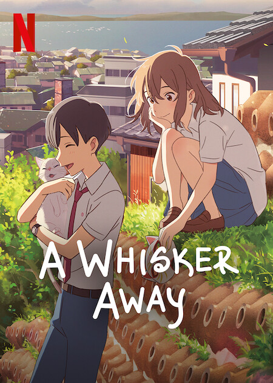
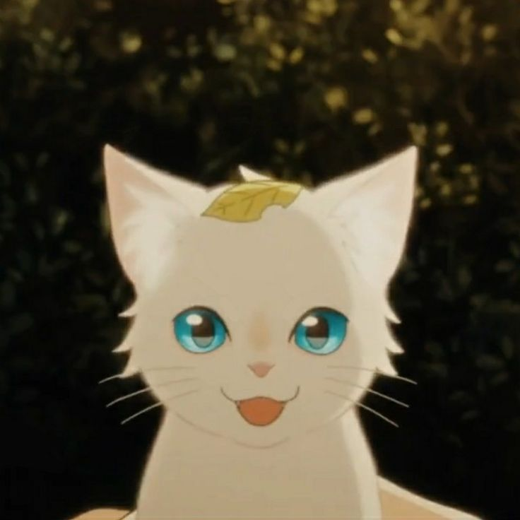
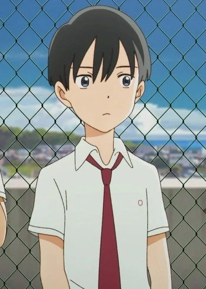
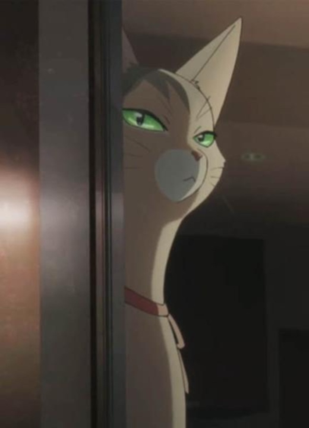

My Favorite Anime Movie

Introduction to "A Whisker Away":
"A Whisker Away" is an anime movie created by directors Junichi Satoh and Tomotaka Shibayama and was released on June 18, 2020 in Netflix.
Synopsis/Summary:
The movie takes place of a girl named Miyo "Muge" Sasaki, who is a peculiar second-year junior high student who has fallen in love with her classmate Kento Hinode. Muge resolutely pursues Kento every day, but he doesn't talk to her. Later, Muge discovers a magic mask that allows her to transform into a cat named Taro. Since then, she has been using that mask ever since she discovered it and when she removes it, she turns back into a human.
Characters:
Miyo "Muge" Sasaki
The main protagonist of the movie. A bright teenager with a crazy personality and can turn into a cat with her cat mask. Has a crush with Kento Hinode but he doesn't want to talk to her.

Taro
The cat form of Muge (Miyo Sasaki). Taro is a cute cat with white fur and teal blue eyes. When Miyo transform into Taro she can talk to Kento Hinode, who is her crush.

Kento Hinode
Muge's crush but he doesn't like to talk to her after her confession. However, he likes Taro, Muge's cat form, whenever he sees her he can't help but pet her and show off his soft spot to her. In the end, when he found out that Taro is actually Muge, he apologized and stayed together.

Unamed Cat Mask Seller
He is the main antagonist of the movie. He is a cat person who sells cat masks to people, which will turn them into cats. However, if you don't want to stay as a human anymore, he'll take away your human form and you will be stuck as a cat forever.

Kinako
A female cat with dark and light fur with green eyes. Has an owner named Kaoru. When both of them were young, they were shown to be in a loving relationship. Kinako helps Taro to get her human mask back from the unamed cat mask seller.
References:
NA. (n.d.). Anime News Network. Retrieved February 8, 2023, from https://www.animenewsnetwork.com/encyclopedia/anime.php?id=23007
Allen, N. (2020, June 18). A Whisker Away movie review & film summary (2020). rogerebert.com Retrieved from: https://www.rogerebert.com/reviews/a-whisker-away-movie-review-2020
Anonymous. (n.d.). Miyo Sasaki | Nakitai Watashi Wiki - Fandom. nakitaiwatashi.fandom.com Retrieved from: https://nakitaiwatashi.fandom.com/wiki/Miyo_Sasaki
Uploaded by Rainy on pinterest. (n.d.). A whisker away taro. Retrieved from: https://www.pinterest.ph/pin/818318194793547672/
Anonymous. (n.d.). Kento Hinode | Nakitai Watashi Wiki - Fandom. nakitaiwatashi.fandom.com Retrieved from: https://nakitaiwatashi.fandom.com/wiki/Kento_Hinode
Anonymous. (n.d.). Cat Mask Seller | Villains Wiki | Fandom. villains.fandom.com. Retrieved from: https://villains.fandom.com/wiki/Cat_Mask_Seller
NA. (n.d.). Kinako - Nakitai Watashi Wiki - Fandom. Retrieved from: https://nakitaiwatashi.fandom.com/wiki/Kinako#Background
Anonymous. (n.d.). Kinako A Whisker Away- Fandom. nakitaiwatashi.fandom.com. Retrieved from: https://karutaexchange.com/card/wtgjbl